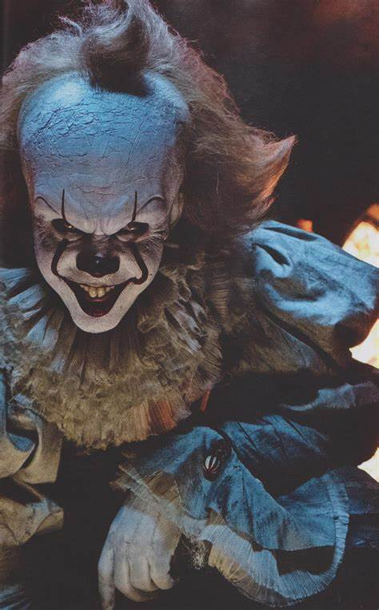

The Dark Knight Rises is a fantasy action film in which Batman returns to Gotham City when it is threatened by a new enemy. Showing time: Mondays-Thursdays- 10:30, 13:45, 17:15.

But by the end of the film's first scene, when Pennywise makes his attack on poor Georgie, you know that this is not a late '90s adaptation of It. This is a brutal R-rated horror film, one that begins with a shocking scene of violence committed against a child. (The woman sitting next to me literally scream out loud at the sight of what happens.)Showing time: Friday-Sunday- 9:15, 12:10, 15:30, 18:00.